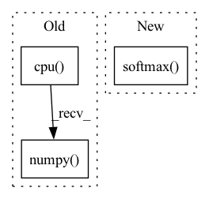

Pattern ID :51
Before Change
import numpy as np
pred_boxes = [target["boxes"].detach().cpu().numpy() for target in targets]
pred_boxes[0][:, -1] = pred_boxes[0][:, -1] / 1.98
pred_boxes[0][-1, 0] = pred_boxes[0][-1, 0] + 2
// pred_boxes[0] = pred_boxes[0][:-1]After Change
)
// Evaluate validation predictions based on metric
pred_probs = F.softmax( out["pred_logits"], dim=-1)
self._evaluator.add(
pred_boxes=[boxes.detach().cpu().numpy() for boxes in out["pred_boxes"]],
pred_classes=[torch.max(probs, dim=-1)[1].detach().cpu().numpy() for probs in pred_probs],
pred_scores=[torch.max(probs, dim=-1)[0].detach().cpu().numpy() for probs in pred_probs],In pattern: SUPERPATTERN
Frequency: 3
Non-data size: 3
Instances Fragment ID: 731195
Project Name: bwittmann/transoar
Commit Name: 038712ea672293567370db8964b32e84989ca21e
Time: 2021-11-26
Author: bastian.wittmann@tum.de
File Name: transoar/trainer.py
M Class Name: Trainer
N Class Name: Trainer
M Method Name: _validate(2)
N Method Name: _validate(2)
M Parent Class:
N Parent Class:
M File Name: transoar/trainer.py
N File Name: transoar/trainer.py
M Start Line: 87
M End Line: 155
N Start Line: 97
N End Line: 149
Before Change
damage_pred = np.concatenate([first, damage_pred], axis=0)
cv2.imwrite(os.path.join(preds_dir,
"test_localization_" + sample["img_name"][i] + "_prediction.png"),
(binary_pred[i, 0].cpu().numpy() > 0.3) * 1)
cv2.imwrite(os.path.join(preds_dir,
"test_damage_" + sample["img_name"][i] + "_prediction.png"),
np.argmax(damage_pred, axis=0))After Change
original_mask = sample["original_mask"].cuda().long().cpu().numpy()
output = net(imgs)
damage_preds = torch.softmax( output, dim=1) .cpu().numpy()
for i in range(output.shape[0]):
damage_pred = damage_preds[i]
argmax = np.argmax(damage_pred, axis=0) Fragment ID: 731192
Project Name: selimsef/xview2_solution
Commit Name: ea1fa7aa3efe68dc18f59453a1f093a0bf27112f
Time: 2020-04-17
Author: selim.sef@gmail.com
File Name: train.py
M Class Name: AnonimousClass
N Class Name: AnonimousClass
M Method Name: validate(3)
N Method Name: validate(3)
M Parent Class:
N Parent Class:
M File Name: train.py
N File Name: train.py
M Start Line: 277
M End Line: 294
N Start Line: 283
N End Line: 295
Before Change
preds = model(input)
// preds =preds.argmax(dim=2) //找出概率最大的那个字符
// print(preds)
preds=preds.view(-1).detach().cpu().numpy()
newPreds=decodePlate(preds)
plate=""
for i in newPreds:
plate+=plateName[i]After Change
def get_plate_result(img,device,model):
input = image_processing(img,device)
preds = model(input)
preds=torch.softmax( preds,dim=-1)
prob,index=preds.max(dim=-1)
index = index.view(-1).detach().cpu().numpy()
prob=prob.view(-1).detach().cpu().numpy() Fragment ID: 731196
Project Name: we0091234/chinese_license_plate_detection_recognition
Commit Name: f11e92224ba0b3ba752ddbae1df2532532173cfd
Time: 2022-12-08
Author: 447587096@qq.com
File Name: plate_recognition/plate_rec.py
M Class Name: AnonimousClass
N Class Name: AnonimousClass
M Method Name: get_plate_result(3)
N Method Name: get_plate_result(3)
M Parent Class:
N Parent Class:
M File Name: plate_recognition/plate_rec.py
N File Name: plate_recognition/plate_rec.py
M Start Line: 50
M End Line: 60
N Start Line: 52
N End Line: 68